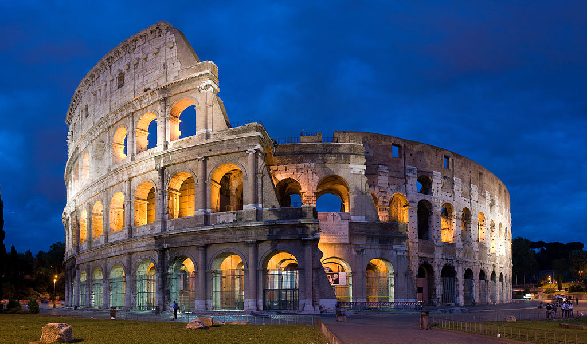

Rzym, Włochy

Rzym, stolica Włoch, jest miastem o bogatej historii sięgającej tysiącleci wstecz. Znany jako Wieczne Miasto, Rzym zachwyca swoimi starożytnymi zabytkami, artystycznymi skarbami i niepowtarzalnym urokiem włoskiej kultury.
**Najważniejsze atrakcje turystyczne w Rzymie:**
1. **Koloseum**: Symbol potęgi i majestatu starożytnego Rzymu, to amfiteatr rzymski jest jednym z najbardziej ikonicznych zabytków na świecie, przyciągającym miliony turystów rocznie.
2. **Panteon**: Doskonały przykład starożytnego rzymskiego budownictwa, Panteon zachwyca swoją kopułą i wewnętrzną architekturą, a także jest miejscem pochówku słynnych postaci z historii Włoch.
3. **Fontanna di Trevi**: Ta barokowa fontanna jest nie tylko pięknym dziełem sztuki, ale także stanowi symbol szczęścia i obfitości. Tradycja każe rzucać monetę do fontanny, aby wrócić do Rzymu w przyszłości.
4. **Bazylika św. Piotra w Watykanie**: Jedna z największych i najważniejszych bazylik chrześcijańskich na świecie, miejscem pochówku św. Piotra i centralnym punktem Watykanu.
5. **Forum Romanum**: Serce starożytnego Rzymu, Forum Romanum było centrum życia publicznego, a dziś można podziwiać tu ruiny rzymskich świątyń, pałaców i baszt.
6. **Wzgórze Palatyn**: Legendarne miejsce narodzin Rzymu, gdzie znajdują się rezydencje cesarzy i malownicze ogrody, oferujące piękne widoki na miasto.
7. **Piazza Navona**: Jedno z najbardziej malowniczych placów w Rzymie, otoczone kawiarniami, rzeźbami i fontannami, idealne miejsce do spaceru i relaksu.
To tylko kilka z niezliczonych atrakcji, jakie oferuje Rzym. Miasto to fascynuje odwiedzających swoją głęboką historią, architekturą i kulturą, tworząc niezapomniane wspomnienia dla podróżnych z całego świata.
Powrót do strony głównej